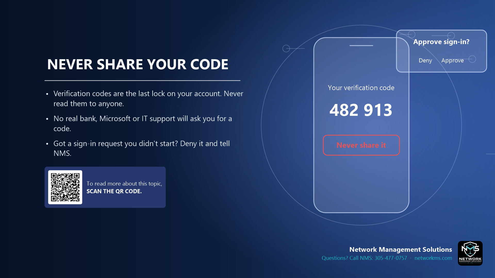

Never share your code

- Verification codes are the last lock on your account. Never read them to anyone.
- No real bank, Microsoft or IT support will ask you for a code.
- Got a sign-in request you didn't start? Deny it and tell NMS.
Multi-factor authentication (MFA) sends a code or an approval request to your phone. If a scammer already has your password, that code is the only thing stopping them.
Scammers call pretending to be your bank or IT support and say they will "send you a code to verify you". If you read it to them, they are in your account.
If your phone asks you to approve a sign-in that you did not start, someone has your password. Tap Deny, then call NMS so we can change it.
Not sure about an email, text or call? Call NMS before you click: 305-477-0757 · networkms.com